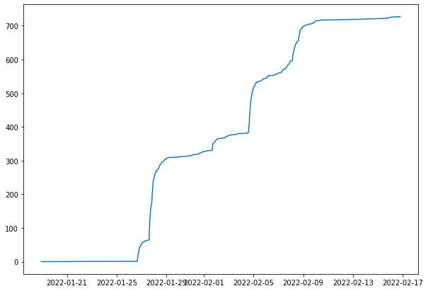

Introduction
Contents
Introduction¶
We do our best to describe what the community is feeling.
from config import survey
import matplotlib.pyplot as plt
import pandas as pd
import altair as alt
Some High Level Results¶
First - how many people answered and how did they answer over time?
print(f'Number of people that responded: {len(survey)}')
Number of people that responded: 728
plt.plot(pd.to_datetime(survey.time), range(len(survey)))
plt.show()

You can see exactly when the email reminders were sent out to the main mailing lists.
And the top level question - would you attend?
attend_histo = (
alt.Chart(data=survey, title="Would you attend?")
.transform_joinaggregate(total='count(*)')
.transform_calculate(pct='1 / datum.total')
.mark_bar()
.encode(
x=alt.X(shorthand="count(attend)"),
y=alt.Y(shorthand="attend:N", title="", sort="-x")
)
)
attend_text = (
attend_histo.mark_text(align="right", dx=-3)
.encode(
text=alt.Text("sum(pct):Q", format=".0%"),
color=alt.value("white")
)
)
attend_histo + attend_text
Below…
brush = alt.selection_single(encodings=['y'])
chart_e = (alt.Chart(data=survey, title="Who Employed Me?")
.mark_bar()
.encode(
y=alt.Y(shorthand="employed_by:N", sort='-x', title=""),
x=alt.X(shorthand="count()",title="Number of people"),
tooltip=alt.Tooltip("count():N"),
color=alt.condition(brush, alt.value('blue'), alt.value('orange'))
)
.add_selection(brush)
)
chart_w = (alt.Chart(data=survey, title="What am I?")
.mark_bar()
.encode(
y=alt.Y(shorthand="job_rank:N", sort='-x', title=""),
x=alt.X(shorthand="count()",title="Number of people"),
tooltip=alt.Tooltip("count():N"),
)
.transform_filter(brush)
)
chart_e & chart_w
Logistics¶
This survey was run from x to y.